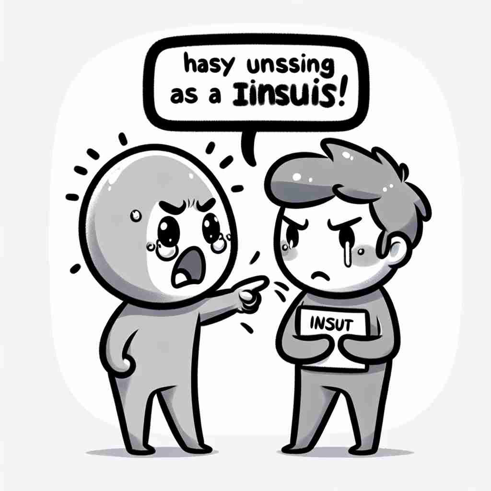

💬 He didn't mean to insult someone's feelings when he yelled. 他并不是故意在大喊时伤害别人的感情。

💬 The tornado seems to insult someone in the park. 龙卷风似乎在公园里侮辱某人。
💬 He didn't mean to insult someone's feelings when he yelled. 他并不是故意在大喊时伤害别人的感情。
💬 The tornado seems to insult someone in the park. 龙卷风似乎在公园里侮辱某人。
🧠 'Insult'的核心含义是'冒犯'或'侮辱'，源自拉丁语'insultare'，原意是'跳跃'或'攻击'。想象某人用言语或行为对他人'跳起来'攻击，这种形象有助于理解和记忆'insult'的各种用法。无论是动词还是名词形式，都围绕着这个核心概念展开，表达了不同程度的冒犯或不尊重。
🔈 [ɪn'sʌlt]
🗝️ v. to say or do something that offends someone 冒犯某人的言行
🎭 在一个朋友聚会中，大家正热烈地讨论着各种话题。有个人突然插嘴，毫不客气地评判另一个人的穿着，使那个人面露尴尬和难过。这就体现了'insult'作为冒犯他人的动作。
💬 He felt insulted by her rude comments. 他对她的粗鲁评论感到受 insult。
🌳 由前缀 "in-"（在...里/否定）和词根 "sult"（跳跃）组成。"sult" 源自拉丁语 "saltare"，意为跳跃。合在一起，"insult" 可以理解为情感或态度上的一种侵犯或冒犯。
💡 记忆 "insult" 时，可以联想 "in" 表示否定的态度，"sult" 可以让人想起突如其来的冒犯，就如同一个人跳到你面前，给你带来情感上的冲击。
🗝️ v. to treat with insolence, indignity, or contempt 以无礼、轻蔑或侮辱的方式对待
🎭 在一间会议室里，一位公司高管对新来的实习生说话时充满轻蔑，不停地打断他们的发言，并且用蔑视的语气态度。这种行为展示了'insult'作为一种傲慢和不尊重的表现。
💬 The boss insulted his employees by ignoring their contributions. 老板无视员工的贡献，侮辱了他们。
🤔 扩展自核心含义，强调以不尊重的方式对待他人
🗝️ v. to behave with pride or arrogance 以自豪或傲慢的态度行事
🎭 在一个大型派对上，一位名人四处走动，故意不理会其他人的问候和握手，表现出过于自豪和傲慢的态度，折射出'insult'作为一种自大和傲慢的行为。
💬 His arrogant attitude insulted everyone around him. 他的傲慢态度侮辱了周围的每一个人。
🤔 源自原意中的'跳跃'，引申为自负的行为
🗝️ n. a rude or offensive remark or action 粗鲁或冒犯性的言论或行为
🎭 在书店的柜台前，一名顾客对店员高声抱怨，说出了许多难听的话，使周围的人都投以异样的目光。这就是'insult'作为粗鲁或冒犯性言辞的体现。
💬 His comment was a direct insult to her intelligence. 他的评论对她的智力是一种直接的侮辱。
🤔 动词含义的名词化，指冒犯性的言行
🗝️ n. something that causes offense or disrespect 冒犯或不尊重的事物
🎭 在一个公司年度晚会上，有人故意在演讲中扭曲同事的名字，引发了大家的不满和尴尬。这个行为展现了'insult'作为导致冒犯或不尊重之举的情境。
💬 The low offer was an insult to the value of her work. 这份低报价对于她工作的价值是一种侮辱。
🤔 进一步抽象化，指任何造成冒犯的事物